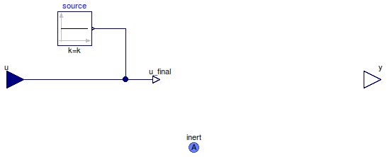

Table of Contents
- User's Guide
- Blocks
- Conditions
- Assemblies
- Regions
- Subregions
- Connectors
- Characteristics
- Units
- Quantities
- BaseClasses
Download
- Latest: FCSys-2.0.zip (**Please check back soon or contact kdavies4 at gmail.com.)

| Name | Description |
|---|---|
| Specify temperature (measure heat flow rate) | |
| Specify heat flow rate (measure temperature) | |
| Custom expressions | |
| Base classes (not generally for direct use) |
 FCSys.Conditions.InertAmagat.Thermal.Temperature
FCSys.Conditions.InertAmagat.Thermal.Temperature
| Type | Name | Default | Description |
|---|---|---|---|
| ConditionType | conditionType | BaseClasses.ConditionType.Te… | Type of condition |
| Axes with linear momentum included | |||
| Boolean | inclLinX | true | X |
| Boolean | inclLinY | false | Y |
| Boolean | inclLinZ | false | Z |
| Specification | |||
| Boolean | internal | true | Use internal specification |
| Type | Name | Description |
|---|---|---|
| InertAmagat | inert | Connector for linear momentum and heat, with additivity of volume |
model Temperature "Specify temperature (measure heat flow rate)" extends BaseClasses.PartialCondition( final conditionType=BaseClasses.ConditionType.Temperature, u(final unit="l2.m/(N.T2)", displayUnit="K"), source(k(start=298.15*U.K)), final y(final unit="l2.m/T3") = inert.Qdot); equation inert.T = u_final; end Temperature;
FCSys.Conditions.InertAmagat.Thermal.HeatRate
| Type | Name | Default | Description |
|---|---|---|---|
| ConditionType | conditionType | BaseClasses.ConditionType.He… | Type of condition |
| Axes with linear momentum included | |||
| Boolean | inclLinX | true | X |
| Boolean | inclLinY | false | Y |
| Boolean | inclLinZ | false | Z |
| Specification | |||
| Boolean | internal | true | Use internal specification |
| Constant | source | redeclare Modelica.Blocks.So… | Source of internal specification |
| Type | Name | Description |
|---|---|---|
| InertAmagat | inert | Connector for linear momentum and heat, with additivity of volume |
model HeatRate "Specify heat flow rate (measure temperature)" extends BaseClasses.PartialCondition( final conditionType=BaseClasses.ConditionType.HeatRate, u(final unit="l2.m/T3"), final y( final unit="l2.m/(N.T2)", displayUnit="K") = inert.T); equation inert.Qdot = u_final; end HeatRate;
FCSys.Conditions.InertAmagat.Thermal.Custom
The expression to which the condition is applied (x)
must involve face.T and/or face.Qdot.
Extends from BaseClasses.PartialCondition (Partial model for a thermal condition).
| Type | Name | Default | Description |
|---|---|---|---|
| ConditionType | conditionType | BaseClasses.ConditionType.Cu… | Type of condition |
| Axes with linear momentum included | |||
| Boolean | inclLinX | true | X |
| Boolean | inclLinY | false | Y |
| Boolean | inclLinZ | false | Z |
| Specification | |||
| Boolean | internal | true | Use internal specification |
| Constant | source | redeclare Modelica.Blocks.So… | Source of internal specification |
| Real | x | inert.T | Expression to which the condition is applied |
| Measurement | |||
| RealOutput | y | inert.Qdot | Measurement expression |
| Type | Name | Description |
|---|---|---|
| input RealInput | u | Value of specified condition |
| InertAmagat | inert | Connector for linear momentum and heat, with additivity of volume |
| Measurement | ||
| output RealOutput | y | Measurement expression |
model Custom "Custom expressions" extends BaseClasses.PartialCondition(final conditionType=BaseClasses.ConditionType.Custom, y=inert.Qdot); Real x=inert.T "Expression to which the condition is applied"; equation x = u_final; end Custom;